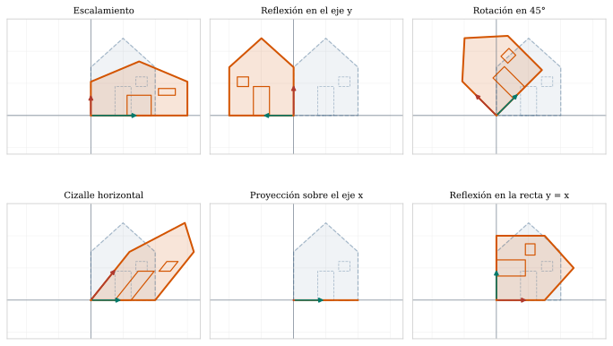
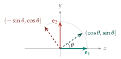
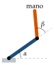

Transformaciones lineales
- reconocer cuándo una función entre espacios vectoriales es lineal;
- encontrar la matriz de una transformación lineal a partir de lo que hace con la base;
- describir rotaciones, reflexiones, escalamientos, proyecciones y cizalles del plano;
- componer e invertir transformaciones usando el producto y la inversa de matrices;
- calcular el núcleo y la imagen de una transformación.
En el Capítulo 1 dijimos que las funciones lineales \(f(x)=mx\) eran la “semilla” del álgebra lineal. Ahora la semilla germina: una transformación lineal es una función que recibe vectores y entrega vectores respetando sumas y productos por escalares. Cada vez que un videojuego gira un personaje, una app endereza una foto o un robot mueve su brazo, hay una matriz transformando vectores.
8.1 Conceptos
8.1.1 ¿Qué es una transformación lineal?
Una función \(T:V\to W\) entre espacios vectoriales es una transformación lineal si para todos \(\vu,\vv\in V\) y todo escalar \(c\):
\(V\) es el dominio (donde viven las entradas) y \(W\) el codominio (donde viven las salidas).
Si \(T\) es lineal:
- \(T(\cero)=\cero\) (una transformación que mueve el origen no es lineal);
- \(T\) respeta combinaciones lineales: \(T(c_1\vv_1+\cdots+c_k\vv_k)=c_1T(\vv_1)+\cdots+c_kT(\vv_k)\);
- las rectas se transforman en rectas (o en un punto) y el origen queda fijo; las cuadrículas se transforman en cuadrículas de paralelogramos.
8.1.2 Toda matriz es una transformación lineal, y viceversa
Si \(A\) es una matriz de \(m\times n\), la función \(T(\vx)=A\vx\) es lineal de \(\R^n\) en \(\R^m\), porque \(A(\vu+\vv)=A\vu+A\vv\) y \(A(c\vu)=cA\vu\). Lo sorprendente es que toda transformación lineal entre estos espacios es de esta forma.
Si \(T:\R^n\to\R^m\) es lineal, entonces \(T(\vx)=A\vx\), donde \(A\) es la matriz cuyas columnas son las imágenes de la base estándar:
Basta saber qué le pasa a los vectores de una base para saber qué le pasa a todos.
La razón: \(\vx=x_1\vect e_1+\cdots+x_n\vect e_n\), así que \(T(\vx)=x_1T(\vect e_1)+\cdots+x_nT(\vect e_n)\), que es exactamente \(A\vx\) (Capítulo 4: matriz por vector es combinación de columnas).
8.1.3 Transformaciones geométricas del plano

| Transformación | Matriz | Qué hace |
|---|---|---|
| Escalamiento | \(\begin{pmatrix}a&0\\0&b\end{pmatrix}\) | estira o encoge: \(a\) veces en \(x\), \(b\) veces en \(y\) |
| Reflexión en el eje \(x\) | \(\begin{pmatrix}1&0\\0&-1\end{pmatrix}\) | \((x,y)\mapsto(x,-y)\) |
| Reflexión en el eje \(y\) | \(\begin{pmatrix}-1&0\\0&1\end{pmatrix}\) | \((x,y)\mapsto(-x,y)\) |
| Reflexión en \(y=x\) | \(\begin{pmatrix}0&1\\1&0\end{pmatrix}\) | intercambia las coordenadas |
| Rotación en ángulo \(\theta\) | \(\begin{pmatrix}\cos\theta&-\sin\theta\\\sin\theta&\cos\theta\end{pmatrix}\) | gira en sentido antihorario |
| Proyección sobre el eje \(x\) | \(\begin{pmatrix}1&0\\0&0\end{pmatrix}\) | \((x,y)\mapsto(x,0)\) (la “sombra”) |
| Cizalle horizontal | \(\begin{pmatrix}1&k\\0&1\end{pmatrix}\) | \((x,y)\mapsto(x+ky,\,y)\) (inclina) |

8.1.4 Composición e inversa
Si \(T_A(\vx)=A\vx\) y \(T_B(\vx)=B\vx\), aplicar primero \(T_B\) y después \(T_A\) es
La matriz de la composición es \(AB\): la transformación que se aplica primero va a la derecha. Si \(A\) es invertible, \(T_A\) se puede “deshacer”, y la transformación inversa tiene matriz \(A\inv\).
Como \(AB\neq BA\) en general, el orden importa: no es lo mismo girar y luego estirar que estirar y luego girar.
8.1.5 Núcleo e imagen
Para una transformación lineal \(T:V\to W\):
- el núcleo es \(\nul(T)=\{\vv\in V: T(\vv)=\cero\}\), todo lo que \(T\) “aplasta” al cero;
- la imagen es \(\Img(T)=\{T(\vv):\vv\in V\}\), todo lo que \(T\) puede producir.
Si \(T(\vx)=A\vx\), el núcleo es el espacio nulo de \(A\) y la imagen es el espacio columna de \(A\).
Si \(T:\R^n\to\R^m\) es lineal con matriz \(A\): \(\ \dimension\nul(T)+\dimension\Img(T)=n\) (el teorema del rango, Capítulo 7). Además, \(T\) es inyectiva (no hay dos entradas con la misma salida) si y solo si \(\nul(T)=\{\cero\}\).
8.1.6 Cambio de base: la misma transformación vista con otros ojos
En el Capítulo 7 vimos que un vector tiene distintas coordenadas según la base que usemos. Si \(B=\{\vv_1,\dots,\vv_n\}\) es una base de \(\R^n\) y \(P=(\vv_1\ \cdots\ \vv_n)\) es la matriz con esos vectores como columnas (la matriz de cambio de base), entonces
Si \(T(\vx)=A\vx\) y \(B\) es una base con matriz \(P\), la matriz de \(T\) en las coordenadas de \(B\) es
La idea: \(P\) traduce de coordenadas \(B\) a coordenadas normales, \(A\) transforma y \(P\inv\) traduce de vuelta. Elegir bien la base puede volver muy simple una matriz complicada. Por ejemplo, para \(A=\begin{pmatrix}2&1\\1&2\end{pmatrix}\) y \(B=\{(1,1),(1,-1)\}\):
Vista en la base \(B\), la transformación solo estira al triple en la dirección \((1,1)\) y deja quieta la dirección \((1,-1)\). Encontrar bases así es el tema del Capítulo 10.
8.1.7 Área y determinante
Una transformación lineal del plano con matriz \(A\) convierte el cuadrado unitario en el paralelogramo de lados \(T(\vect e_1)\) y \(T(\vect e_2)\), cuya área es \(\abs{\det A}\) (Capítulo 5). Por eso:
Una transformación lineal multiplica todas las áreas por \(\abs{\det A}\) (y en \(\R^3\), todos los volúmenes). Si \(\det A<0\), además “da vuelta” la figura, como un espejo. Si \(\det A=0\), aplasta el plano en una recta o un punto.
¿Qué matriz rota en \(90^\circ\)? ¿Cuánto vale su determinante y qué significa?
Ver respuesta
8.2 Cómo utilizar los conceptos
- Calcula \(T(\cero)\). Si no es \(\cero\), no es lineal.
- Mira la fórmula: si cada componente de la salida es una suma de constantes por las variables (sin constantes sueltas, potencias, productos de variables, raíces, senos…), es lineal y tiene matriz.
- Si dudas, verifica (i) y (ii) con letras; para negar, basta un contraejemplo numérico.
- Calcula \(T(\vect e_1),\dots,T(\vect e_n)\).
- Ponlos como columnas: esa es \(A\).
- Si te dan las imágenes de otra base \(\vv_1,\dots,\vv_n\): si \(P=(\vv_1\cdots\vv_n)\) y \(Q=(T(\vv_1)\cdots T(\vv_n))\), entonces \(AP=Q\) y \(A=QP\inv\).
- Comprueba con un vector cualquiera.
- Escribe la matriz de cada paso: \(A_1\) (primero), \(A_2\) (segundo), …
- Multiplica en orden inverso: \(A=A_k\cdots A_2A_1\).
- Aplica \(A\) a los puntos que quieras transformar.
- Poner las imágenes \(T(\vect e_i)\) como filas en lugar de columnas.
- Multiplicar las matrices de una composición en el orden en que se aplican (\(A_1A_2\) en vez de \(A_2A_1\)).
- Usar la calculadora en radianes cuando el ángulo está en grados (o al revés).
- Pensar que una traslación \((x,y)\mapsto(x+1,y)\) es lineal: mueve el origen, así que no lo es.
8.3 Ejemplos resueltos
Decide cuáles son lineales: a) \(T(x,y)=(2x-y,\ x+3y)\) b) \(S(x,y)=(x+1,\ y)\) c) \(U(x,y)=(xy,\ x)\).
Solución. a) Lineal: es \(\begin{pmatrix}2&-1\\1&3\end{pmatrix}\begin{pmatrix}x\\y\end{pmatrix}\). b) No: \(S(0,0)=(1,0)\neq\cero\) (es una traslación). c) No: \(U(2(1,1))=U(2,2)=(4,2)\), pero \(2U(1,1)=2(1,1)=(2,2)\).
Encuentra la matriz de \(T:\R^3\to\R^2\), \(T(x,y,z)=(x+2y,\ 3z-x)\).
Solución. \(T(\vect e_1)=T(1,0,0)=(1,-1)\), \(T(\vect e_2)=(2,0)\), \(T(\vect e_3)=(0,3)\). Entonces \(A=\begin{pmatrix}1&2&0\\-1&0&3\end{pmatrix}\), y en efecto \(A(x,y,z)=(x+2y,\ -x+3z)\).
Rota el punto \((3,1)\) en \(30^\circ\) alrededor del origen.
Solución.
Comprobación: la distancia al origen se conserva, \(\sqrt{9+1}\approx3.16\) y \(\sqrt{2.10^2+2.37^2}\approx3.16\).
Primero se refleja en el eje \(x\) (\(F\)) y luego se rota en \(90^\circ\) (\(R\)). ¿Qué transformación resulta? ¿Y en el orden contrario?
Solución. \(F=\begin{pmatrix}1&0\\0&-1\end{pmatrix}\), \(R=\begin{pmatrix}0&-1\\1&0\end{pmatrix}\). Primero \(F\), luego \(R\): \(RF=\begin{pmatrix}0&1\\1&0\end{pmatrix}\), la reflexión en la recta \(y=x\). En el orden contrario: \(FR=\begin{pmatrix}0&-1\\-1&0\end{pmatrix}\), la reflexión en la recta \(y=-x\). ¡Resultados distintos!
Describe el núcleo y la imagen de \(T(\vx)=A\vx\) con \(A=\begin{pmatrix}1&2&3\\2&4&6\end{pmatrix}\).
Solución. Escalonando, la segunda fila se anula: \(\rango(A)=1\). Núcleo: \(x+2y+3z=0\), un plano de \(\R^3\) con base \(\{(-2,1,0),(-3,0,1)\}\) (dimensión 2). Imagen: \(\gen\{(1,2)\}\), una recta de \(\R^2\) (dimensión 1). Comprobación: \(2+1=3\). \(T\) no es inyectiva (aplasta un plano entero en el cero).
Con \(B=\{(1,1),(1,-1)\}\) y \(A=\begin{pmatrix}2&1\\1&2\end{pmatrix}\), calcula \([\vx]_B\) para \(\vx=(5,1)\) y comprueba que \([T(\vx)]_B=[T]_B[\vx]_B\).
Solución. \(P\inv=\frac{1}{-2}\begin{pmatrix}-1&-1\\-1&1\end{pmatrix}=\begin{pmatrix}\frac12&\frac12\\\frac12&-\frac12\end{pmatrix}\), así que \([\vx]_B=P\inv(5,1)=(3,2)\) (como en la Figura 7.2). Por otro lado, \(T(\vx)=A(5,1)=(11,7)\) y \([T(\vx)]_B=P\inv(11,7)=(9,2)\). Con la matriz diagonal: \([T]_B[\vx]_B=\begin{pmatrix}3&0\\0&1\end{pmatrix}\begin{pmatrix}3\\2\end{pmatrix}=\begin{pmatrix}9\\2\end{pmatrix}\). ✓ En la base \(B\) la transformación solo multiplica la primera coordenada por 3.
En \(P_2\), la derivada \(D(a+bx+cx^2)=b+2cx\) es lineal, porque la derivada de una suma es la suma de las derivadas y \((kp)'=kp'\). Encuentra su matriz en la base \(\{1,x,x^2\}\) y su núcleo.
Solución. \(D(1)=0\leftrightarrow(0,0,0)\), \(D(x)=1\leftrightarrow(1,0,0)\), \(D(x^2)=2x\leftrightarrow(0,2,0)\). Como columnas:
El núcleo son los polinomios con derivada cero: las constantes, \(\gen\{1\}\), de dimensión 1. La imagen es \(P_1\), de dimensión 2.
8.4 Aplicaciones en la vida real
En un videojuego, cada personaje es una lista de vértices. Para girarlo, agrandarlo o reflejarlo, el programa multiplica todos los vértices por una matriz. Si una nave tiene un vértice en \((3,1)\) y gira \(30^\circ\), el vértice pasa a \(\approx(2.10,\ 2.37)\), como en el ejemplo anterior. Para hacer varias cosas seguidas (escalar, girar, reflejar), se multiplican antes las matrices y se aplica una sola matriz a miles de vértices: es mucho más rápido. Las tarjetas gráficas son, en esencia, máquinas de multiplicar matrices.
Un brazo robótico gira su primera articulación en un ángulo \(\alpha\) y la segunda en \(\beta\). Girar en \(\beta\) y luego en \(\alpha\) equivale a girar en \(\alpha+\beta\), así que \(R(\alpha)R(\beta)=R(\alpha+\beta)\). Multiplicando:
¡las fórmulas del coseno y el seno de una suma salen solas! Los robots industriales calculan la posición de su “mano” multiplicando una matriz por cada articulación.

Cuando el sol está lejos, sus rayos son paralelos, y la sombra de un objeto sobre el suelo es una proyección, que es lineal. Si los rayos vienen en la dirección \((1,1,-2)\), el punto \((x,y,z)\) proyecta su sombra en \((x+\tfrac z2,\ y+\tfrac z2)\) sobre el suelo:
La punta de un poste de 4 m en el origen, \((0,0,4)\), deja su sombra en \((2,2)\). Los programas de arquitectura y de animación calculan así las sombras.
Cuando una aplicación de fotos rota, refleja o inclina (cizalle) una imagen, calcula para cada píxel de la imagen nueva de qué posición de la imagen original proviene, usando la matriz inversa. Por ejemplo, para deshacer un cizalle \(\begin{pmatrix}1&k\\0&1\end{pmatrix}\) se usa \(\begin{pmatrix}1&-k\\0&1\end{pmatrix}\). Los filtros de “enderezar horizonte” son rotaciones de unos pocos grados.
8.5 Ejercicios de práctica
- 8.1
¿Cuáles son lineales?
- \(T(x,y)=(3x,\ x-y)\)
- \(T(x,y)=(x^2,\ y)\)
- \(T(x,y)=(x+y,\ 2)\)
- \(T(x,y,z)=x+y+z\)
- 8.2Encuentra la matriz estándar de: a) \(T(x,y)=(x-2y,\ 4x,\ y)\) b) \(T(x,y,z)=(2x+z,\ y-z)\).Ver solución
- 8.3Si \(T(\vx)=A\vx\) con \(A=\begin{pmatrix}1&2\\-1&3\end{pmatrix}\), calcula \(T(2,1)\) y \(T(-1,0)\).Ver solución
- 8.4Escribe la matriz de rotación en \(90^\circ\), en \(180^\circ\) y en \(60^\circ\). Rota el punto \((1,0)\) en \(60^\circ\).Ver solución
- 8.5Describe geométricamente: a) \(\begin{pmatrix}-1&0\\0&-1\end{pmatrix}\) b) \(\begin{pmatrix}3&0\\0&3\end{pmatrix}\) c) \(\begin{pmatrix}0&-1\\1&0\end{pmatrix}\) d) \(\begin{pmatrix}1&0\\0&-1\end{pmatrix}\).Ver solución
- 8.6\(T\) es lineal, con \(T(1,0)=(2,5)\) y \(T(0,1)=(-1,3)\). Calcula \(T(3,-2)\).Ver solución
- 8.7Sea \(T\) el estiramiento al doble en la dirección \(x\) y \(S\) la rotación en \(90^\circ\). Encuentra las matrices de “primero \(T\) y luego \(S\)” y de “primero \(S\) y luego \(T\)”. Aplícalas a \((1,1)\).Ver solución
- 8.8Encuentra el núcleo y la imagen de \(T(\vx)=A\vx\), con \(A=\begin{pmatrix}1&-1\\2&-2\end{pmatrix}\).Ver solución
- 8.9Para \(A=\begin{pmatrix}1&0&2\\0&1&-1\\1&1&1\end{pmatrix}\), encuentra las dimensiones del núcleo y de la imagen y una base del núcleo.Ver solución
- 8.10Encuentra la transformación inversa de \(T(x,y)=(2x+y,\ 5x+3y)\).Ver solución
- 8.11Encuentra la matriz de la transformación lineal \(T\) que cumple \(T(1,1)=(3,1)\) y \(T(1,-1)=(1,-1)\).Ver solución
- 8.12Encuentra la matriz que primero refleja en la recta \(y=x\) y luego proyecta sobre el eje \(x\). ¿Qué le hace a \((x,y)\)?Ver solución
- 8.13Un triángulo de área 6 se transforma con \(A=\begin{pmatrix}3&1\\1&2\end{pmatrix}\). ¿Qué área tiene el resultado? ¿Y si se usa el cizalle \(\begin{pmatrix}1&4\\0&1\end{pmatrix}\)?Ver solución
- 8.14En \(P_2\), sea \(T(p)=p+p'\). Encuentra su matriz en la base \(\{1,x,x^2\}\) y decide si es invertible.Ver solución
- 8.15En un videojuego, un triángulo tiene vértices \((0,0)\), \((4,0)\) y \((0,2)\). Se rota \(90^\circ\) y luego se agranda al 150 %. Encuentra la matriz total y los nuevos vértices.Ver solución
- 8.16Un brazo robótico de 2 m está apoyado sobre el eje \(x\), con la mano en \((2,0)\). Gira \(30^\circ\) y después \(60^\circ\) más. ¿Dónde queda la mano? Comprueba que \(R(60^\circ)R(30^\circ)=R(90^\circ)\).Ver solución
- 8.17Con la matriz de sombras de la Aplicación 8.3, encuentra la sombra de la copa de un árbol situada en \((1,3,6)\).Ver solución
- 8.18Un editor de imágenes aplica el cizalle \(\begin{pmatrix}1&0.5\\0&1\end{pmatrix}\). ¿A dónde va el píxel \((2,4)\)? ¿Qué matriz deshace el cambio?Ver solución
- 8.19Encuentra la matriz de la derivada \(D:P_3\to P_3\) en la base \(\{1,x,x^2,x^3\}\), su rango y la dimensión de su núcleo.Ver solución
- 8.20Desafío. Demuestra, usando solo la definición, que toda transformación lineal cumple \(T(\cero)=\cero\) y \(T(c_1\vv_1+c_2\vv_2)=c_1T(\vv_1)+c_2T(\vv_2)\).Ver solución
8.6 Solucionario
8.1 Solución del ejercicio 8.1
a) Sí, matriz \(\begin{pmatrix}3&0\\1&-1\end{pmatrix}\). b) No: \(T(2,0)=(4,0)\neq2T(1,0)=(2,0)\). c) No: \(T(0,0)=(0,2)\). d) Sí, matriz \(\begin{pmatrix}1&1&1\end{pmatrix}\).↑ volver al enunciado8.2 Solución del ejercicio 8.2
a) \(\begin{pmatrix}1&-2\\4&0\\0&1\end{pmatrix}\) b) \(\begin{pmatrix}2&0&1\\0&1&-1\end{pmatrix}\).↑ volver al enunciado8.3 Solución del ejercicio 8.3
\(T(2,1)=(4,1)\); \(T(-1,0)=(-1,1)\).↑ volver al enunciado8.4 Solución del ejercicio 8.4
\(R_{90}=\begin{pmatrix}0&-1\\1&0\end{pmatrix}\), \(R_{180}=\begin{pmatrix}-1&0\\0&-1\end{pmatrix}\), \(R_{60}=\begin{pmatrix}\frac12&-\frac{\sqrt3}2\\\frac{\sqrt3}2&\frac12\end{pmatrix}\); \(R_{60}(1,0)=(\tfrac12,\tfrac{\sqrt3}2)\).↑ volver al enunciado8.5 Solución del ejercicio 8.5
a) Rotación en \(180^\circ\) (simetría respecto del origen). b) Agranda 3 veces (homotecia). c) Rotación en \(90^\circ\). d) Reflexión en el eje \(x\).↑ volver al enunciado8.6 Solución del ejercicio 8.6
\(T(3,-2)=3(2,5)-2(-1,3)=(8,9)\).↑ volver al enunciado8.7 Solución del ejercicio 8.7
\(T=\begin{pmatrix}2&0\\0&1\end{pmatrix}\), \(S=\begin{pmatrix}0&-1\\1&0\end{pmatrix}\). Primero \(T\) luego \(S\): \(ST=\begin{pmatrix}0&-1\\2&0\end{pmatrix}\), \((1,1)\mapsto(-1,2)\). Primero \(S\) luego \(T\): \(TS=\begin{pmatrix}0&-2\\1&0\end{pmatrix}\), \((1,1)\mapsto(-2,1)\).↑ volver al enunciado8.8 Solución del ejercicio 8.8
Núcleo: \(x-y=0\), \(\gen\{(1,1)\}\). Imagen: \(\gen\{(1,2)\}\). Ambos de dimensión 1.↑ volver al enunciado8.9 Solución del ejercicio 8.9
\(\det A=0\) y \(\rango A=2\): imagen de dimensión 2 y núcleo de dimensión 1, con base \(\{(-2,1,1)\}\).↑ volver al enunciado8.10 Solución del ejercicio 8.10
La matriz \(\begin{pmatrix}2&1\\5&3\end{pmatrix}\) tiene inversa \(\begin{pmatrix}3&-1\\-5&2\end{pmatrix}\): \(T\inv(x,y)=(3x-y,\ -5x+2y)\).↑ volver al enunciado8.11 Solución del ejercicio 8.11
\(A\begin{pmatrix}1&1\\1&-1\end{pmatrix}=\begin{pmatrix}3&1\\1&-1\end{pmatrix}\), así \(A=\begin{pmatrix}3&1\\1&-1\end{pmatrix}\begin{pmatrix}1&1\\1&-1\end{pmatrix}\inv=\begin{pmatrix}2&1\\0&1\end{pmatrix}\).↑ volver al enunciado8.12 Solución del ejercicio 8.12
\(\begin{pmatrix}1&0\\0&0\end{pmatrix}\begin{pmatrix}0&1\\1&0\end{pmatrix}=\begin{pmatrix}0&1\\0&0\end{pmatrix}\): \((x,y)\mapsto(y,0)\).↑ volver al enunciado8.13 Solución del ejercicio 8.13
\(\det A=5\): área \(30\). El cizalle tiene determinante \(1\): el área sigue siendo \(6\).↑ volver al enunciado8.14 Solución del ejercicio 8.14
\(T(1)=1\), \(T(x)=x+1\), \(T(x^2)=x^2+2x\): \(\begin{pmatrix}1&1&0\\0&1&2\\0&0&1\end{pmatrix}\), triangular con determinante \(1\): invertible.↑ volver al enunciado8.15 Solución del ejercicio 8.15
Matriz total \(1.5\,R_{90}=\begin{pmatrix}0&-1.5\\1.5&0\end{pmatrix}\). Vértices: \((0,0)\), \((0,6)\), \((-3,0)\).↑ volver al enunciado8.16 Solución del ejercicio 8.16
\(R(60^\circ)R(30^\circ)=\begin{pmatrix}\frac12&-\frac{\sqrt3}2\\\frac{\sqrt3}2&\frac12\end{pmatrix}\begin{pmatrix}\frac{\sqrt3}2&-\frac12\\\frac12&\frac{\sqrt3}2\end{pmatrix}=\begin{pmatrix}0&-1\\1&0\end{pmatrix}=R(90^\circ)\). La mano queda en \(R(90^\circ)(2,0)=(0,2)\).↑ volver al enunciado8.17 Solución del ejercicio 8.17
\((1+3,\ 3+3)=(4,6)\).↑ volver al enunciado8.18 Solución del ejercicio 8.18
\((2+0.5\cdot4,\ 4)=(4,4)\). Se deshace con \(\begin{pmatrix}1&-0.5\\0&1\end{pmatrix}\).↑ volver al enunciado8.19 Solución del ejercicio 8.19
\([D]=\begin{pmatrix}0&1&0&0\\0&0&2&0\\0&0&0&3\\0&0&0&0\end{pmatrix}\); rango 3; núcleo (las constantes) de dimensión 1. (\(3+1=4\). ✓)↑ volver al enunciado8.20 Solución del ejercicio 8.20
\(T(\cero)=T(0\cdot\cero)=0\cdot T(\cero)=\cero\). Y \(T(c_1\vv_1+c_2\vv_2)=T(c_1\vv_1)+T(c_2\vv_2)=c_1T(\vv_1)+c_2T(\vv_2)\), usando (i) y luego (ii).↑ volver al enunciado
¿Terminaste de estudiar este capítulo?